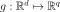
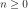
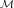
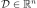
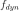
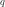

DynamicalFunction¶
-
class
DynamicalFunction(*args)¶ Dynamical function.
- Available constructors:
DynamicalFunction(meshDimension=1)
DynamicalFunction(function, meshDimension=1)
Parameters: function :
NumericalMathFunctionFunction  used to define a
SpatialFunctionobject.meshDimension : int, 
Dimension of the mesh .
Notes
Dynamical functions are functions being able to act on fields. OpenTURNS defines two particular dynamical functions: the
spatial functionand thetemporal function.A dynamical function where  and is defined by:
with and .
A dynamical function  transforms a multivariate stochastic process:

where is discretized according to the mesh into the multivariate stochastic process:

such that:

where the mesh is discretized according to the .
A dynamical function also acts on fields and produces fields of possibly different dimension () and mesh ( or ).
OpenTURNS only proposes dynamical functions where and
 which means that through the spatial function
and the temporal function. It follows that the process
which means that through the spatial function
and the temporal function. It follows that the process  shares the
same mesh with , only its values have changed.
shares the
same mesh with , only its values have changed.Methods
__call__(*args)getCallsNumber()Get the number of calls of a DynamicalFunction. getClassName()Accessor to the object’s name. getId()Accessor to the object’s id. getImplementation(*args)Accessor to the underlying implementation. getInputDescription()Get the description of the inputs. getInputDimension()Get the dimension of the input. getMarginal(*args)Get the marginal(s) at given indice(s). getName()Accessor to the object’s name. getOutputDescription()Get the description of the outputs. getOutputDimension()Get the dimension of the output. getOutputMesh(inputMesh)Get the mesh associated to the output process. getSpatialDimension()Get the dimension of the mesh. setName(name)Accessor to the object’s name. -
__init__(*args)¶
-
getCallsNumber()¶ Get the number of calls of a DynamicalFunction.
Returns: callsNumber : int
Counts the number of times the DynamicalFunction has been called since its creation.
-
getClassName()¶ Accessor to the object’s name.
Returns: class_name : str
The object class name (object.__class__.__name__).
-
getId()¶ Accessor to the object’s id.
Returns: id : int
Internal unique identifier.
-
getImplementation(*args)¶ Accessor to the underlying implementation.
Returns: impl : Implementation
The implementation class.
-
getInputDescription()¶ Get the description of the inputs.
Returns: inputDescription :
DescriptionDescribes the inputs of the dynamical function.
-
getInputDimension()¶ Get the dimension of the input.
Returns: d : int
Input dimension
 of the dynamical function.
of the dynamical function.
-
getMarginal(*args)¶ Get the marginal(s) at given indice(s).
Parameters: i : int or list of ints,

Indice(s) of the marginal(s) needed.
is the dimension of the
DynamicalFunction.Returns: dynamicalFunction :
DynamicalFunctionDynamicalFunction restricted to the concerned marginal(s) at the indice(s)
 of the dynamical function .
of the dynamical function .
-
getName()¶ Accessor to the object’s name.
Returns: name : str
The name of the object.
-
getOutputDescription()¶ Get the description of the outputs.
Returns: outputDescription :
DescriptionDescribes the outputs of the dynamical function.
-
getOutputDimension()¶ Get the dimension of the output.
Returns: q : int
Output dimension  of the dynamical function.
-
getOutputMesh(inputMesh)¶ Get the mesh associated to the output process.
Returns: outputMesh :
MeshThe mesh of the output process.
-
getSpatialDimension()¶ Get the dimension of the mesh.
Returns: spatialDimension : int,
Dimension of the mesh .
-
setName(name)¶ Accessor to the object’s name.
Parameters: name : str
The name of the object.